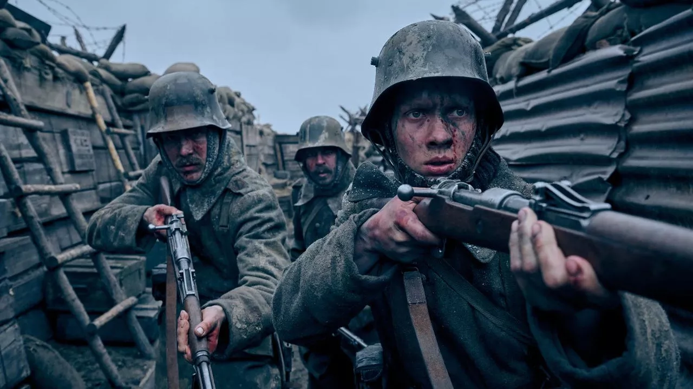
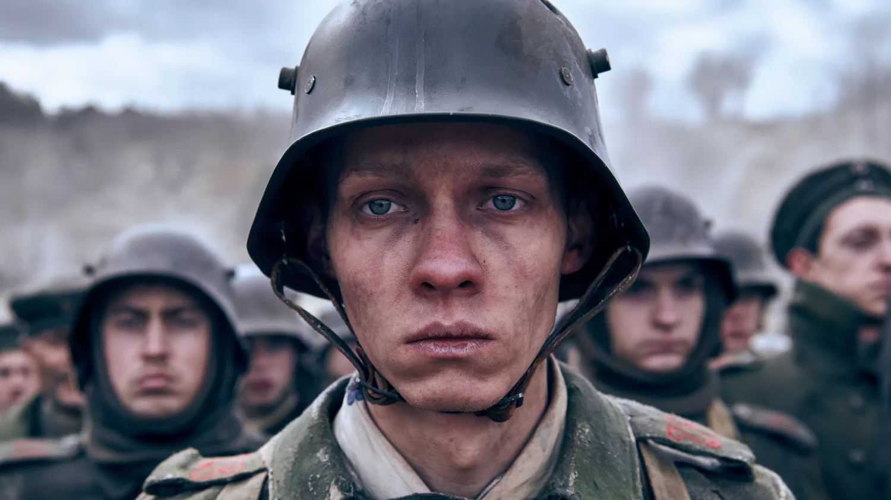
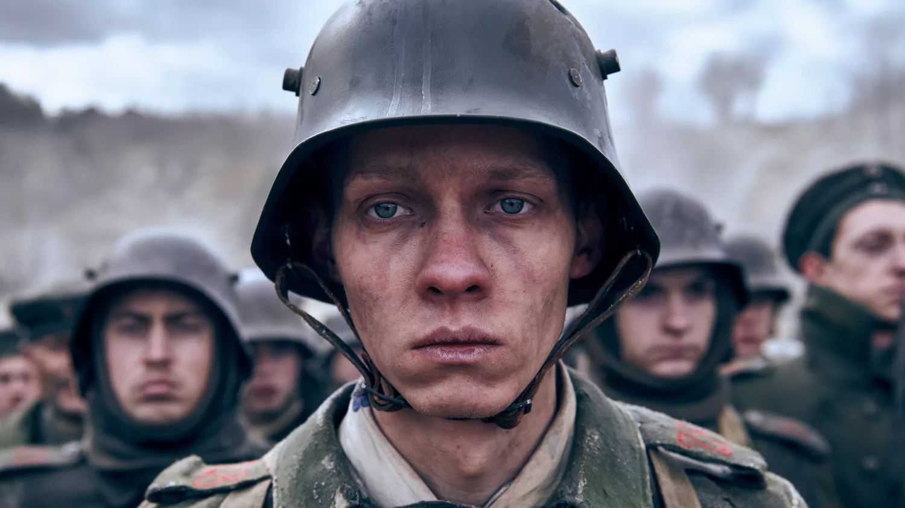

ATLAS reviews
Mikhaella Jing Carumbana
December 25, 2022
all quiet on the western front: into the frontlines of the trench war
 Zane Gabrillo
Zane Gabrillo
 Mikhaella Jing Carumbana
Mikhaella Jing Carumbana

All Quiet on the Western Front has been adapted for the third
time when Netflix dropped their version of the novel. This time,
it is adapted in German giving the film more authenticity. All
Quiet on the Western Front (Im Westen nichts Neues) is a novel
based on the real-life experience of author Erich Maria Remarque
during the first World War as a German soldier. It tells the
story of Paul Baumer, student who enlists in the German army at
the height of extreme nationalism, his enthusiasm quickly wanes
as he learns the realities of war.
There is much to unpack in this story, the novel itself was considered controversial during its initial release. At the time of its release, WWI was still fresh in people’s minds, there has been widespread nationalism, people and politicians alike have romanticized the exploits of war leaving an impression of grandeur in the battlefield. The release of Remarque’s novel shattered the illusion of grandeur and honor. People who have never been to war have only begun to realize that it is not all guts and glory on the battlefield and... They did that like that. Remarque’s novel was met with much criticism, Leaders did not like that this could wane the increasing patriotism of young boys who could become great assets in their military and political exploits and the masses did not like that the realities of war was far from what they have been fed with. The 2022 film pulled no punches in depicting the realities of war. The beginning of the film shows an entirely different person in the frontlines, Heinrich, as he tries to traverse through the battlefield unscathed only to cut to another scene of dead bodies and old uniforms being repaired with Heinrich’s tag confirming the man’s death. We would then see Paul Baumer and his friends enthusiastic about joining the war, this scene, I believe, was not as nuanced as the other films as they went out their way to portray the overarching nationalism that convinced the boys to enlist. The scene would then transition to a part where they were given their uniforms, we would later find out that Paul was given Heinrich’s uniform which made it even more impactful to its message later. The boys would then be assigned to the West Front and be thrusted into battle in their first day in the military. From then, we would see how the enthusiasm and the life of Paul wane as he loses more and gains nothing in this war. This film is a highly effective war film in the sense that the heroes gained nothing from any of this. Stark contrast from other war films where the hero’s journey would end in a bittersweet ending or a legacy that will be left. In this film, it is simply bleak. There was nothing Paul and anyone gained there, everything they fought for and everything they stood for is... Pointless. This is seen in the recycled uniforms in the beginning of the film and in the end when Paul finally met his demise. These soldiers were simply collateral in the battle between two political machineries. This would even be more solidified in the fact that Paul and Kat could have survived the war had the agreement took place immediately instead of six hours after, because on those six hours, 2,000 more men died including Paul. The war ends with nothing gained, thousands of lives lost, Germany lost, and Paul lost his life in a pointless war... his name forgotten; he would only be known as another German soldier... Another collateral.

There is much to unpack in this story, the novel itself was considered controversial during its initial release. At the time of its release, WWI was still fresh in people’s minds, there has been widespread nationalism, people and politicians alike have romanticized the exploits of war leaving an impression of grandeur in the battlefield. The release of Remarque’s novel shattered the illusion of grandeur and honor. People who have never been to war have only begun to realize that it is not all guts and glory on the battlefield and... They did that like that. Remarque’s novel was met with much criticism, Leaders did not like that this could wane the increasing patriotism of young boys who could become great assets in their military and political exploits and the masses did not like that the realities of war was far from what they have been fed with. The 2022 film pulled no punches in depicting the realities of war. The beginning of the film shows an entirely different person in the frontlines, Heinrich, as he tries to traverse through the battlefield unscathed only to cut to another scene of dead bodies and old uniforms being repaired with Heinrich’s tag confirming the man’s death. We would then see Paul Baumer and his friends enthusiastic about joining the war, this scene, I believe, was not as nuanced as the other films as they went out their way to portray the overarching nationalism that convinced the boys to enlist. The scene would then transition to a part where they were given their uniforms, we would later find out that Paul was given Heinrich’s uniform which made it even more impactful to its message later. The boys would then be assigned to the West Front and be thrusted into battle in their first day in the military. From then, we would see how the enthusiasm and the life of Paul wane as he loses more and gains nothing in this war. This film is a highly effective war film in the sense that the heroes gained nothing from any of this. Stark contrast from other war films where the hero’s journey would end in a bittersweet ending or a legacy that will be left. In this film, it is simply bleak. There was nothing Paul and anyone gained there, everything they fought for and everything they stood for is... Pointless. This is seen in the recycled uniforms in the beginning of the film and in the end when Paul finally met his demise. These soldiers were simply collateral in the battle between two political machineries. This would even be more solidified in the fact that Paul and Kat could have survived the war had the agreement took place immediately instead of six hours after, because on those six hours, 2,000 more men died including Paul. The war ends with nothing gained, thousands of lives lost, Germany lost, and Paul lost his life in a pointless war... his name forgotten; he would only be known as another German soldier... Another collateral.
